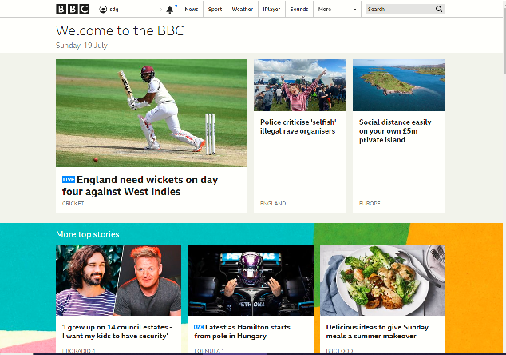

About
Redis is a very powerful distributed caching engine and offers very low latency key-value pair caching. If used in the right business context,
Redis can significantly boost application performance.
In this article we will do a walk through of how to use Redis Cache from the perspective of a .NET Core Serverless HTTP function.
I intend to demonstrate the simplicity and elegance of Redis caching through the following topics:
- Installing Redis locally and on Azure
- Using the command line tools of Redis
- Scripting the installation of Azure Redis via PowerShell and ARM templates
- Writing some sample C# code to demonstrate the key-value pair caching aspect of Redis using a sample Azure HTTP trigger function
- Benchmarking the latency and throughput of Redis using simple C# client code
What is a distributed cache?
What is a cache? Think of it as a repository of frequently used data which can be accessed very speedily, thereby improving application performance.
If we go back to the early days of .NET Framework 1.0, ASP.NET provided a means of caching objects in the memory of the worker process.
The cached data was confined to the local server. If your objects supported binary serialization then using the in-proc Cache was fairly easy.
It was all fine until you faced the need for scaling out your web servers to more than one instance. How do you keep the in-proc cache on 2 or more web servers in sync.

In the scenario of a load balanced farm with more than one web servers, if Web server 1 made an update to a record and invalidated its cache, there is no way for Web server 2 to get that knowledge
This is where distributed cache products like Memcached and Redis change the game by taking the cache out of the local web server and placing it on an external server(s).
Notice the plural. Yes - the distributed cache could itself scale out horizontally.
Scenarios where a distributed cache helps
Landing page of a news web site
If you were to hit bbc.co.uk, one cannot help but notice how fast the page gets loaded.
I am not privy to the knowledge if BBC is using Redis or any other caching technology or it could just be a case of a super-fast CMS database.
However, the site is an example of what a good page load response time should be and
can be fairly easily implemented by caching. If you see the results from the Chrome Devtools output, the home page loaded in about 1.5 seconds

Shopping cart of an eCommerce portal
Using a cache for storing transient data such as user session and shopping cart can save expensive database round trips.
Any application which has lots of static data or infrequently changing data
Any line of business application where there is infrequently changing static data held in the database.
Example - Relational tables which store lookup data like countries, item codes, and static customer information.
For most practical purposes there is a lot of mileage to gain if round trips to the database can be minimized.
A bief history of caching in the Microsoft world
- ASP.NET Cache: When Microsoft introduced ASP.NET , a light weight in-memory cache came along with the framework.
- Session state server: An integral part of .NET Framework. This was a stand-alone daemon that let multiple web servers store their session data in the process memory of this executable. You could re-configure your web.config and have all session state stored in a central server, independent of any single web server in a load balanced farm.
- Microsoft Appfabric: Microsoft's attempt to go for a full blown distributed cache. Microsoft has ended support for this product
- Third party products like NCache, Memcached and Redis
ASP.NET Framework Cache
NOT SURE IF SHOULD REMOVE THIS - keep this for a later date
show a simple code snippet
Memcached
to be done
Microsoft AppFabric
to be done
Redis
Redis is an open source distributed in-memory key-value pair database and message broker. The acronym stands for Remote Dictionary Server.
Put simplistically, Redis is a daemon running on a Linux box and listening on incoming connections on a well published port such as 6379.
Redis goes a step ahead of in-memory key-value databases by backing up transient data to a file which helps in rapid recovery in case of failures.
It is more sophisticated than traditional in-memory key-value pair databases because it offers support for complex data types,custom server side scripting, partitioning and pub-sub capabilities.
Example: A simple distributed cache product like Memcached supports key-value pairs ony.
How do I debug and deveop my application which interacts with Redis?
While coding around Redis you have the the following options:
- Install Redis locally
- Abstract away Redis by using an in-memory abstraction (IDistributedCache)
of interacting with directly with the Redis client or through an abstraction layer.
Redis a client-server product which listens on a specific port for incoming requests
Option - When would I need to install Redis locally?
The following scenarios come to my mind:
- You are using the advanced features of Redis such as pub-sub and need to develop/debug locally to test the behaviour
- You are using simple key-value caching, you intend on doing a smoke test of your ASP.NET Core Web app or ASP.NET Azure trigger function and want to debug locally with an actual Redis implementation
Option - When is it enough to just use the in-memory abstraction (IDistributedCache)?
If your scope is limited to key-value pair caching then the interface IDistributedCache is your first point of call.
The interface IDistributedCache is implemented in the assembly Microsoft.Extensions.Caching.Abstractions.dll. I have presented some of the methods below:
Installing Redis server and client locally on Windows
- Option - Redis has been coded and tested on Linux. Fortunately, Microsoft is maintaining the Windows port of Redis and can be downloaded from here .
- Option - To run the most recent version of Redis, you could run Redis via Windows Subsystem for Linux.
If you are following the first option, which is good enough for simple key-value caching, then further steps are below:

- Download and extract the contents to a local folder. E.g. C:\RedisServer
- Navigate to c:\RedisServer\ and type 'redis-server.exe' and then hit ENTER. If everything went well then you can expect this on the CMD prompt
-
You should see the PORT number (6379) where Redis is listening for active connections
-
If the port used by Redis is already locked down by another process then you could use a command line option to specify the port.
Redis command line client
When you download the Windows 10 port of Redis , the package also includes a client executable redis-cli.exe.
The CLI can help you test the server and carry out basic data manipulations as shown in the examples below.
How to launch and connect to the server?
When installed locally:
redis-cli.exe -h localhost -p 6379
From a virtual machine on Azure. Remember to enable non-SSL port because the Redis client may not be compatible with SSL
redis-cli.exe -h <host name from Azure> -p 6379 -a <password from Azure>
List all keys
redis localhost:6379> keys *
39) "foo:rand:000000000016"
40) "foo:rand:000000000017"
41) "foo:rand:000000000018"
42) "foo:rand:000000000019"
43) "mykey-f9d21bca-48f6-4cf8-b68d-1652b9533633"
44) "mykey-43d5b08a-5b60-4c72-8820-dcb6f6372b4b"
Delete a specific key
redis localhost:6379> del mykey-0001
Delete all keys
redis localhost:6379> flushall
Set a key-value cached item
localhost:6379> set key001 value001
Ok
Get a cached item give the key
localhost:6379> get key001
"value001"
C# client application - Programming with StackExchange general purpose client
We will continue to confine our discussions to using Redis as a key-value pair cache. Redis has a .NET package which wraps up the
underlying TCP/IP communications and gives us a nice IDistributedCache to work with.
Which NUGET package?
StackExchange.Redis is a managed wrapper which abstracts the low level client server interactions with the Redis server. This package is completely dependency injection aware.
How to create an instance of IDistributedCache without Dependency Injection
This snippet demonstrates creating an instance of IDistributedCache via explicit construction, given the host and port number. This is a very simple example and I would recommend following the DI route
How to create an instance of IDistributedCache via dependency injection?
This snippet demonstrates creating an instance of IDistributedCache via the ServiceCollection DI container, given the host and port number.
How to create an instance the IServer interface for performing management operations?
The IServer interface is useful for managing an instance of Redis cache.
IServer or IDistributedCache - which one do we need ?
The interface IDistributedCache will address the requirements if you key-value pair caching is all you need.
However, if you want to manage the Redis cache server itself (e.g. flush the cache, enumerate keys, etc.) then the interface IServer is more powerful
How to work with IDistributedCache without having to intall Redis server locally?
The class MemoryDistributedCache provides an inproc implementation of IDistributedCache and very
useful during local development and debugging.
How to conditionally inject an IDistributedCache implementation of MemoryDistributedCache during local development?
You are using the key-value caching functionality of Redis. You are coding an Azure function (could be an ASP.NET Core Web app)
and you want to develop and debug the code. Do you need to install Redis locally? Not neccessary. Through a couple of lines of clever DI, you can "fool" your
classes to use the MemoryDistributedCache implementation of the interface IDistributedCache.
Getting started with Redis on Azure
Creating a Redis cache using the Portal
Creating an instance of Redis cache using the Azure portal is fairly easy. Step by step guidance from Microsoft can be found here.
You should remember to select the correct region and the pricing tier.
The region is important because you want the cache to be in close proximity to your application/web servers for lowest latency.
You should select the pricing tier as per your requirements. As of July 2020, I am not aware of any consumption plan for Redis cache, i.e. you pay a flat monthly fee.
I have presented a snapshot of Redis pricing from the Azure pricing calculator page.
I would not mind chosing the C0 instance for a medium sized Development environment. However, for production, I would go for C2 or higher.
Creating a Redis cache using PowerShell
The cmdlet New-AzResourceGroupDeployment is your friend. The ARM template for Redis cache can be found in the central ARM
template's repository here.
The deployment can be easily automated via CI/CD on Azure Devops following the steps shown in the script above.
How to get the connection string?
You have deployed an instance of Redis cache via CI/CD. Good. But, how does your client application become aware about the existence of this cache instance.
Your next step would be to update the connection string in the Configuration settings of your Azure function/Webapp
Redis performance benchmark
Why do we need to benchmark the performance of Redis cache?
The primary motivation for using a distributed cache is to make the application perform better.
In most scenarios the central data storage becomes the bottleneck. Benchmarking the distributed cache
gives us an idea of how much latency and throughput to expect from the cache for various document sizes.
Using the out of box Redis cache redis-benchmark.exe tool
In the following example I am stressing the cache on my local computer with a document of size 1000 bytes for a total of 5000 requests with the default
number of concurrent threads (50).
To reduce the overheads of network latencies, this test was carried out from a virtual machine which is located in the same Azure location as the Redis cache.
In the example below we can see that 94.56% of the requests took less than or equal to 10 milliseconds at an overall throughput of 6544.50 requests per second.
redis-benchmark.exe -h ****.redis.cache.windows.net -p 6379 -a ******* -n 500 -d 1000 -t set,get
====== GET ======
5000 requests completed in 0.76 seconds
50 parallel clients
1000 bytes payload
keep alive: 1
0.68% <= 1 milliseconds
10.26% <= 2 milliseconds
30.00% <= 3 milliseconds
33.58% <= 5 milliseconds
33.62% <= 6 milliseconds
37.16% <= 7 milliseconds
48.62% <= 8 milliseconds
78.00% <= 9 milliseconds
94.56% <= 10 milliseconds
97.72% <= 11 milliseconds
97.96% <= 12 milliseconds
98.32% <= 13 milliseconds
98.34% <= 19 milliseconds
98.74% <= 20 milliseconds
98.96% <= 41 milliseconds
99.02% <= 60 milliseconds
99.28% <= 61 milliseconds
99.86% <= 62 milliseconds
100.00% <= 62 milliseconds
6544.50 requests per second
Results
About the accompanying source code
Write something OR point to Readme.md